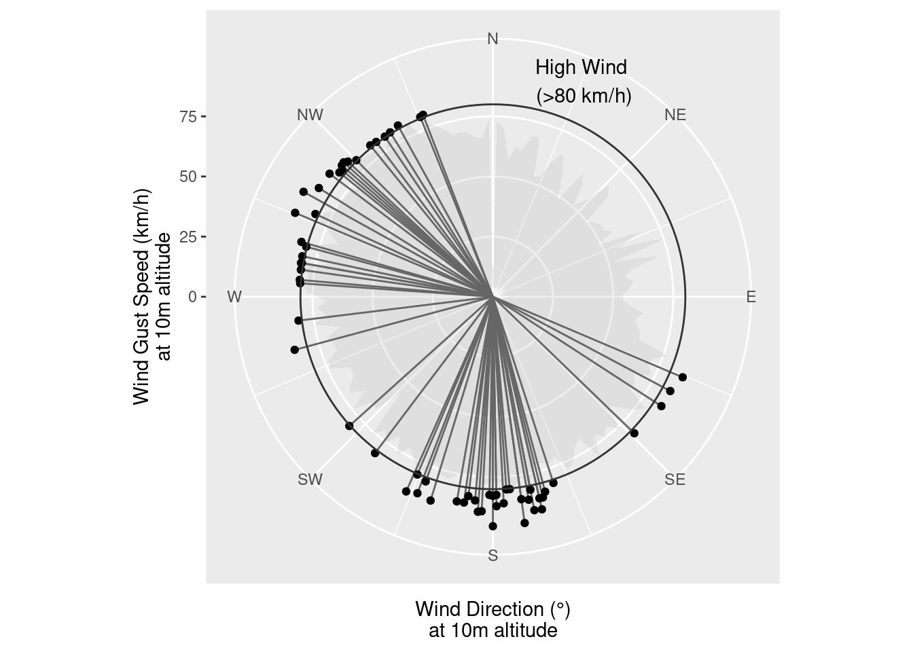

library(ggplot2)
library(palmerpenguins)
data("penguins")
theme_set(theme_bw())The Rules, and when to break them…
Rules and Guidelines for Graphics
There have been many sets of guidelines published about how to create charts and graphs, as far back as at least 1915 (“Joint Committee on Standards for Graphic Presentation” 1915). Other useful references for creating “good” graphics are Wilke (2019) and Kosslyn (2006). Many people also like Tufte (2001), which advocates for extreme minimalism in graphs well beyond what is supported by empirical research.
The 1915 guidelines are universal enough that most of the guidelines are still relevant today, despite the vast technological changes in chart creation in the last 100 years. The biggest oversight present in these recommendations is the lack of any attention to color; this is reasonable given that color charts produced during that era required the use of lithography. Where appropriate, I have rephrased, clarified language, or made a connection to a more general or modern principle below the original. Sketches are provided in the original paper to illustrate each recommendation.
- The general arrangement of a diagram should proceed from left to right.
That is, the x-axis should be increasing when moving right.
- Where possible, represent quantities by linear magnitudes as areas or volumes are more likely to be misinterpreted.
Use the simplest representation of the data possible to convey the information. Ensure comparisons for which higher accuracy is required are represented spatially, using other aesthetics to represent variables where numerical precision is less relevant.
Principle of “proportional ink” - the ink dedicated to a quantity should be equivalent to the quantity.
- For a curve, the vertical scale, whenever practicable, should be selected so that the zero line will appear on the diagram.
Ensure that the natural range of the data is clearly indicated.
- If the zero line of the vertical scale will not normally appear on the curve diagram, the zero line should be shown by the use of a horizontal break in the diagram.
More generally, use axis ranges that are relevant for the comparisons you wish to highlight. If comparisons are to be made on multiple scales, use inset graphs to show both the wider context and the zoomed-in details.
- The zero lines of the scales for a curve should be sharply distinguished from the other coordinate lines.
The axes should be visually distinguishable from the data.
- For curves having a scale representing percentages, it is usually desirable to emphasize in some distinctive way the 100% line or other line used as a basis of comparison.
Reference lines should be provided to make obvious comparisons easier.
When the scale of a diagram refers to dates and the period represented is not a complete unit, it is better not to emphasize the first and last ordinates, since a diagram does not represent the beginning or end of time.
When curves are drawn on logarithmic coordinates, the limiting lines of the diagram should each be at some power of ten on the logarithmic scales.
Axis breaks should be meaningful and “round”. When transforms are used, minor breaks should indicate the presence of the transform through uneven spacing.
- It is advisable not to show any more coordinate lines than necessary to guide the eye in reading the diagram.
Make the plot as simple as possible without over-simplifying. Provide only necessary grid lines and other visual annotations.
- The curve lines of a diagram should be sharply distinguished from the ruling.
Grid lines should be visually distinguishable from the data.
- In curves representing a series of observations, it is advisable, whenever possible, to indicate clearly on the diagram all the points representing the separate observations.
Show both the data and the summary statistics created using the data when possible.
- The horizontal scale for curves should usually be read from left to right, and the vertical scale from bottom to top.
Use conventional data representations to best fit into the Gestalt heuristics expected by viewers.
- Figures for the scales of a diagram should be placed at the left and bottom, or along the respective axes.
Use conventional layouts and positioning of axis elements to adhere to viewer expectations.
- It is often desirable to include in the diagram the numerical data or formulae represented.
Where possible, provide the numerical data as a table or annotations on the chart. When included as text, this makes the information available to screen reader users as well as enabling greater precision.
- If numerical data are not included in the diagram it is desirable to give the data in tabular form accompanying the diagram.
Make your complete data available for reproducbility purposes. Provide numerical summary data that is shown visually in a table for accessibility and numerical precision.
- All lettering and all figures on a diagram should be placed so as to be easily read from the base as the bottom or from the right hand edge of the diagram as the bottom.
Use either horizontal text or vertical text oriented so that it can be easily read by the viewer.
- The title of a diagram should be made as clear and complete as possible. Sub-titles or descriptions should be added if necessary to ensure clearness.
Use descriptive titles, subtitles, and figure captions. Include in the subtitle or figure caption the source of the data and any context necessary to interpret the graph. In the caption or alt-text, explain what variables are represented using what aesthetics, and highlight interesting features that the viewer should notice.
In addition to these guidelines, there are a few other considerations that often surface in general design guidelines:
Color choices [;Reda (2022)]
General guidance: Crameri, Shephard, and Heron (2020), Simmon (2013)
For categorical variables, use no more than 7 distinct categories. Harrower and Brewer (2003) contains a number of different categorical schemes validated for use in maps (but that are often used for other data visualizations as well).
For continuous variables, consider using a transformation to maximize order-of-magnitude discrimination. Log2, Log10, and square root transformations are common depending on the range of the data represented.
Leverage common associations (e.g. cold = blue, hot = red for temperature) to minimize cognitive and working memory load. Note that these may be culturally dependent. Avoid pink = female, blue = male color scales - not all common representations are good to reinforce or produce useful associations.
Don’t use rainbow color schemes - they’re bad for colorblindness and perceptually nonuniform (Light and Bartlein 2004; Borland and Taylor 2007; Liu and Heer 2018). Some studies found (limited) advantages to these color schemes (Ware 1988; Reda and Szafir 2021).
Where possible, vary either hue or value, but not both. Varying hue but not saturation results in a uniform intensity color scheme, such as those in the viridis palette (@ Garnier 2018). Varying value (color brightness) results in a sequential, monochrome gradient (e.g. from light blue to dark blue). Both viridis and monochrome color schemes have lower error than schemes that vary both hue and saturation (Liu and Heer 2018). When using grey monochrome gradients, the darker half of the spectrum has higher error than the lighter half (Liu and Heer 2018).
Show the difference between two curves rather than showing both curves and relying on the viewer to subtract them - this visual subtraction is prone to optical illusions. Similarly, it is better to show variability and the trend line separately when the trend does not have approximately constant absolute slope. (Cleveland and McGill 1984; VanderPlas and Hofmann 2015)
Aspect ratios are important (Cleveland, McGill, and McGill 1988)
- Bank to \(45^\circ\): when showing a trend, it is helpful to set the aspect ratio of the chart so that a line tangent to the curve is at approximately \(45^\circ\).
- Your aspect ratio should account for your data ranges. If your y-axis varies by 3 units and your x-axis varies over 8 units, you should have a wide, short chart.
Avoid using a third dimension, either as a gratuitous enhancement or to represent additional data (Haemer 1951; Spence 1990; Popelka and Brychtova 2013; Brath 2014; Dübel et al. 2014). Exceptions:
- Naturally 3D data, such as surface topology
- Interactive 3D graphics that can be manipulated by the viewer and use realistic visual effects (e.g. are similar to natural 3D visual perception).
Case Study: Rainbow Color Schemes
While generally speaking, rainbow color schemes aren’t recommended because they’re not perceptually uniform, there are some studies suggesting that they help with identification of global data features, at the cost of local difference detection.
In what circumstances could you justify breaking the “No rainbows” design guideline?
ggplot(penguins) +
geom_point(aes(x = bill_length_mm,
y = bill_depth_mm,
color = body_mass_g)) +
scale_color_viridis_c()Warning: Removed 2 rows containing missing values or values outside the scale range
(`geom_point()`).library(colorspace)
endpoints <- polarLUV(L=c(90, 40), C=50, H=120) |> as("sRGB") |> hex()
ggplot(penguins) +
geom_point(aes(x = bill_length_mm,
y = bill_depth_mm,
color = body_mass_g)) +
scale_color_gradient(low = endpoints[1],
high = endpoints[2],
trans = "log10")Warning: Removed 2 rows containing missing values or values outside the scale range
(`geom_point()`).ggplot(penguins) +
geom_point(aes(x = bill_length_mm,
y = bill_depth_mm,
color = body_mass_g)) +
scale_color_gradientn(colors = rainbow(30))Warning: Removed 2 rows containing missing values or values outside the scale range
(`geom_point()`).library(viridis)Loading required package: viridisLiteggplot(penguins) +
geom_point(aes(x = bill_length_mm,
y = bill_depth_mm,
color = body_mass_g)) +
scale_color_viridis(option = "turbo")Warning: Removed 2 rows containing missing values or values outside the scale range
(`geom_point()`).Does your answer change if we plot each species separately, to emphasize within-species variation?
ggplot(penguins) +
geom_point(aes(x = bill_length_mm,
y = bill_depth_mm,
color = body_mass_g)) +
facet_wrap(~species) +
scale_color_viridis_c()Warning: Removed 2 rows containing missing values or values outside the scale range
(`geom_point()`).ggplot(penguins) +
geom_point(aes(x = bill_length_mm,
y = bill_depth_mm,
color = body_mass_g)) +
facet_wrap(~species) +
scale_color_gradient(low = endpoints[1],
high = endpoints[2],
trans = "log10")Warning: Removed 2 rows containing missing values or values outside the scale range
(`geom_point()`).library(viridis)
ggplot(penguins) +
geom_point(aes(x = bill_length_mm,
y = bill_depth_mm,
color = body_mass_g)) +
facet_wrap(~species) +
scale_color_gradientn(colors = rainbow(30))Warning: Removed 2 rows containing missing values or values outside the scale range
(`geom_point()`).library(viridis)
ggplot(penguins) +
geom_point(aes(x = bill_length_mm,
y = bill_depth_mm,
color = body_mass_g)) +
facet_wrap(~species) +
scale_color_viridis(option = "turbo")Warning: Removed 2 rows containing missing values or values outside the scale range
(`geom_point()`).Case Study: Polar Charts
Comparisons on polar scales are typically less accurate than comparisons on Cartesian scales, because positions are aligned along a common scale and take place over a single direction (Hofmann et al. 2012).
You are working for an institution whose employees are largely ex-military, and familiar with navigating via compass. You want to provide information on the average direction of high wind speeds (gusts \(\geq 50\) mph or 80 kph) in a location over the course of a year, to assist with placement of two sets of emergency equipment to minimize the probability that a single high-wind event compromises both locations.
Data source: Open-Meteo.com. Link to saved CSV
You do some initial data cleaning and preparation to answer your question, but when it comes time to plot the data, you start to consider whether it’s worth considering breaking the polar visualization rule. After all, your audience has some basic familiarity with compass directions, so plotting your data that way leverages their expectations of how directional data will be represented.
suppressPackageStartupMessages(library(readr))
suppressPackageStartupMessages(library(dplyr))
suppressPackageStartupMessages(library(lubridate))
url <- "https://srvanderplas.github.io/workshop-graphics-communication/data/open-meteo-40.39N95.70W305m.csv"
# Read in units, station info, etc.
station_info <- read_csv(url, n_max = 1)Rows: 1 Columns: 6
── Column specification ────────────────────────────────────────────────────────
Delimiter: ","
chr (2): timezone, timezone_abbreviation
dbl (4): latitude, longitude, elevation, utc_offset_seconds
ℹ Use `spec()` to retrieve the full column specification for this data.
ℹ Specify the column types or set `show_col_types = FALSE` to quiet this message.wind <- read_csv(url, skip = 3) |>
mutate(time = force_tz(time, station_info$timezone),
is_high = `wind_gusts_10m (km/h)`>=80)Rows: 87672 Columns: 8
── Column specification ────────────────────────────────────────────────────────
Delimiter: ","
dbl (7): temperature_2m (°C), weather_code (wmo code), wind_speed_10m (km/h...
dttm (1): time
ℹ Use `spec()` to retrieve the full column specification for this data.
ℹ Specify the column types or set `show_col_types = FALSE` to quiet this message.import pandas as pd
wind = pd.read_csv("https://srvanderplas.github.io/workshop-graphics-communication/data/open-meteo-40.39N95.70W305m.csv", skiprows= 3)
wind['is_high'] = wind["wind_gusts_10m (km/h)"] >= 80Consider the following two versions of the same plot:
Warning in geom_hline(aes.inherit = F, yintercept = 80, color = "grey20"):
Ignoring unknown parameters: `aes.inherit`Warning in geom_hline(aes.inherit = F, yintercept = 80, color = "grey20"):
Ignoring unknown parameters: `aes.inherit`
ggplot(wind, aes(x = `wind_direction_10m (°)`,
y = `wind_gusts_10m (km/h)`)) +
# Represent low wind gust speed data on the plot
stat_summary_bin(data = filter(wind, !is_high),
binwidth = 2.5,
fun.min = "min", fun.max = "max",
geom = "ribbon", fill = "grey", alpha = .25) +
# Emphasize direction while showing gust speed
# by dropping vertical line
geom_segment(data = filter(wind, is_high),
aes(xend = `wind_direction_10m (°)`,
yend = 0),
color = "grey40") +
geom_point(data = filter(wind, is_high)) +
# Scale breaks that are sensible
scale_x_continuous("Wind Direction (°)\nat 10m altitude",
limits = c(0, 360),
breaks = c(0, 45, 90, 135, 180, 225, 270, 315, 360),
labels = c("N", "NE", "E", "SE", "S", "SW", "W", "NW", "N"),
minor_breaks = seq(0, 360, by = 22.5)) +
scale_y_continuous("Wind Gust Speed (km/h)\nat 10m altitude") +
# Annotations to explain different treatment of high gust speeds
geom_hline(aes.inherit = F, yintercept = 80, color = "grey20") +
annotate("text", x = 10, y = 80, label = "High Wind\n(>80 km/h)", hjust=-0.1, vjust = -0.1)Warning in geom_hline(aes.inherit = F, yintercept = 80, color = "grey20"):
Ignoring unknown parameters: `aes.inherit`ggplot(wind, aes(x = `wind_direction_10m (°)`,
y = `wind_gusts_10m (km/h)`)) +
# Represent low wind gust speed data on the plot
stat_summary_bin(data = filter(wind, !is_high),
binwidth = 2.5,
fun.min = "min", fun.max = "max",
geom = "ribbon", fill = "grey", alpha = .25) +
# Emphasize direction while showing gust speed
# by dropping vertical line
geom_segment(data = filter(wind, is_high),
aes(xend = `wind_direction_10m (°)`,
yend = 0),
color = "grey40") +
geom_point(data = filter(wind, is_high)) +
# Scale breaks that are sensible
scale_x_continuous("Wind Direction (°)\nat 10m altitude",
limits = c(0, 360),
breaks = c(45, 90, 135, 180, 225, 270, 315, 360),
labels = c("NE", "E", "SE", "S", "SW", "W", "NW", "N"),
minor_breaks = seq(0, 360, by = 22.5)) +
scale_y_continuous("Wind Gust Speed (km/h)\nat 10m altitude") +
# Annotations to explain different treatment of high gust speeds
geom_hline(aes.inherit = F, yintercept = 80, color = "grey20") +
annotate("text", x = 10, y = 80, label = "High Wind\n(>80 km/h)", hjust=-0.1, vjust = -0.1) +
coord_polar(theta = "x", start = 0)Warning in geom_hline(aes.inherit = F, yintercept = 80, color = "grey20"):
Ignoring unknown parameters: `aes.inherit`Which do you prefer? Why? Is it justifiable to break the “polar = bad” rule?
Can you think of any alternatives or modifications that might provide similar contextual cues without using polar coordinates?
Case Study:
Borland, D., and R. M. Taylor. 2007. “Rainbow Color Map (Still) Considered Harmful.” IEEE Computer Graphics and Applications 27 (2): 14–17. https://doi.org/10.1109/mcg.2007.323435.
Brath, Richard. 2014. “3D InfoVis Is Here to Stay: Deal with It.” In 2014 IEEE VIS International Workshop on 3DVis (3DVis), 25–31. https://doi.org/10.1109/3DVis.2014.7160096.
Cleveland, William S., Marylyn E. McGill, and Robert McGill. 1988. “The Shape Parameter of a Two-Variable Graph.” Journal of the American Statistical Association 83 (402): 289–300. https://doi.org/10.1080/01621459.1988.10478598.
Cleveland, William S., and Robert McGill. 1984. “Graphical Perception: Theory, Experimentation, and Application to the Development of Graphical Methods.” Journal of the American Statistical Association 79 (387): 531–54. https://doi.org/10.1080/01621459.1984.10478080.
Crameri, Fabio, Grace E. Shephard, and Philip J. Heron. 2020. “The Misuse of Colour in Science Communication.” Nature Communications 11 (1): 5444. https://doi.org/10.1038/s41467-020-19160-7.
Dübel, Steve, Martin Röhlig, Heidrun Schumann, and Matthias Trapp. 2014. “2D and 3D Presentation of Spatial Data: A Systematic Review.” In 2014 IEEE VIS International Workshop on 3DVis (3DVis), 11–18. https://doi.org/10.1109/3DVis.2014.7160094.
Garnier, Simon. 2018. Viridis: Default Color Maps from ’Matplotlib’. https://CRAN.R-project.org/package=viridis.
Haemer, Kenneth W. 1951. “The Pseudo Third Dimension.” The American Statistician 5 (4): 28–28. https://doi.org/10.1080/00031305.1951.10501121.
Harrower, Mark, and Cynthia A. Brewer. 2003. “ColorBrewer.org: An Online Tool for Selecting Colour Schemes for Maps.” The Cartographic Journal 40 (1): 27–37. https://doi.org/10.1179/000870403235002042.
Hofmann, Heike, Lendie Follett, Mahbubul Majumder, and Dianne Cook. 2012. “Graphical Tests for Power Comparison of Competing Designs.” IEEE Transactions on Visualization and Computer Graphics 18 (12): 2441–48. https://doi.org/10.1109/TVCG.2012.230.
“Joint Committee on Standards for Graphic Presentation.” 1915. Quarterly Publications of the American Statistical Association 14 (112): 790–97. https://doi.org/10.2307/2965153.
Kosslyn, Stephen M. 2006. Graph Design for the Eye and Mind. Oxford University Press.
Light, Adam, and Patrick J Bartlein. 2004. “The End of the Rainbow? Color Schemes for Improved Data Graphics.” Eos, Transactions American Geophysical Union 85 (40): 385–91. https://doi.org/10.1029/2004EO400002.
Liu, Yang, and Jeffrey Heer. 2018. “Somewhere over the Rainbow: An Empirical Assessment of Quantitative Colormaps.” In Proceedings of the 2018 CHI Conference on Human Factors in Computing Systems, 1–12. Montreal QC Canada: ACM. https://doi.org/10.1145/3173574.3174172.
Popelka, Stanislav, and Alzbeta Brychtova. 2013. “Eye-Tracking Study on Different Perception of 2D and 3D Terrain Visualisation.” The Cartographic Journal 50 (3): 240–46. https://doi.org/10.1179/1743277413Y.0000000058.
Reda, Khairi. 2022. “Rainbow Colormaps: What Are They Good and Bad For?” IEEE Transactions on Visualization and Computer Graphics, 1–15. https://doi.org/10.1109/TVCG.2022.3214771.
Reda, Khairi, and Danielle Albers Szafir. 2021. “Rainbows Revisited: Modeling Effective Colormap Design for Graphical Inference.” IEEE Transactions on Visualization and Computer Graphics 27 (2): 1032–42. https://doi.org/10.1109/TVCG.2020.3030439.
Simmon, Robert. 2013. “Subtleties of Color.” NASA. https://earthobservatory.nasa.gov/blogs/elegantfigures/2013/08/05/subtleties-of-color-part-1-of-6.
Spence, Ian. 1990. “Visual Psychophysics of Simple Graphical Elements.” Journal of Experimental Psychology: Human Perception and Performance 16: 683–92. https://doi.org/10.1037/0096-1523.16.4.683.
Tufte, Edward. 2001. The Visual Display of Quantitative Information. 2nd ed. Graphics Press.
VanderPlas, Susan, and Heike Hofmann. 2015. “Signs of the Sine Illusion—Why We Need to Care.” Journal of Computational and Graphical Statistics 24 (4): 1170–90. https://doi.org/10.1080/10618600.2014.951547.
Ware, C. 1988. “Color Sequences for Univariate Maps: Theory, Experiments and Principles.” IEEE Computer Graphics and Applications 8 (5): 41–49. https://doi.org/10.1109/38.7760.
Wilke, Claus. 2019. Fundamentals of Data Visualization: A Primer on Making Informative and Compelling Figures. 1st edition. Sebastopol, CA: O’Reilly Media.